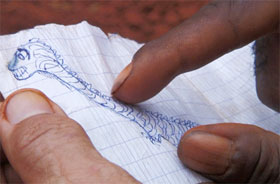

L’hypothèse du Mokélé-Mbembe
The Hypothesis of Mokélé-Mbembe

Marie Voignier – France 2011 – 78 min.
Sc+DOP+E: Marie Voignier – S: Thomas Fourel – P: Thierry Lounas
Digital – French
The Loch Ness monster, the abominable snowman, Bigfoot: they exist in myths, sagas and legends. Deep in the jungle in the south-east of Cameroon, the French zoologist and explorer Michel Ballot has for years been looking for proof of the existence of another such mythical being, the Mokele-Mbembe. It's like a rhinoceros with the tail of a crocodile and the head of a snake – at least that is how the pygmies describe this giant dinosaur, which apparently can even change its shape.
In this occasionally comic documentary essay, Ballot turns out to be a tenacious investigator, who cross-examines the local population keenly and wants to install cameras to capture the Mokele-Mbembe. The French filmmaker Marie Voignier follows him without commentary, adding mystery to her portrait.
Is the Mokele-Mbembe pure fiction, or does he perhaps really exist? Or is that question completely irrelevant and does the film show the confrontation between the empirically inclined Westerner and the pygmies, for whom tradition counts? – IFF Rotterdam
Friday 10/10 6.30 p.m. Werkstattkino – Guest: Marie Voignier
Interview with Marie Voignier (engl.)
Marie Voignier, born in 1974 in Ris-Orangis, France, moves between documentary and visual arts. In 2010 she had a first solo exhibition held in gallery Marcelle Alix.
Films (selection): Les fantômes 2004 – Western DDR 2005 – Le bruit du canon 2006 – Au travail 2008 – Hinterland 2009 (9. UX) – Hearing the Shape of a Drum 2010 – L'hypothèse du Mokélé-Mbembé 2011 – Tourisme International 2014 (9. UX)